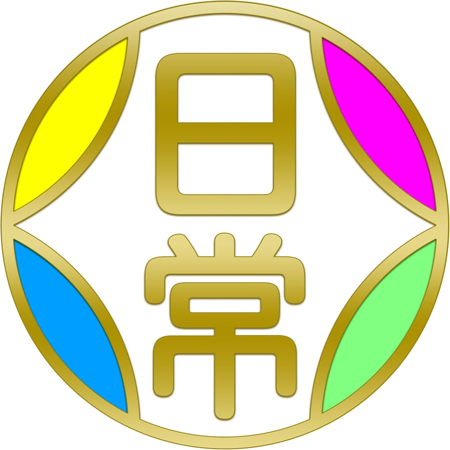
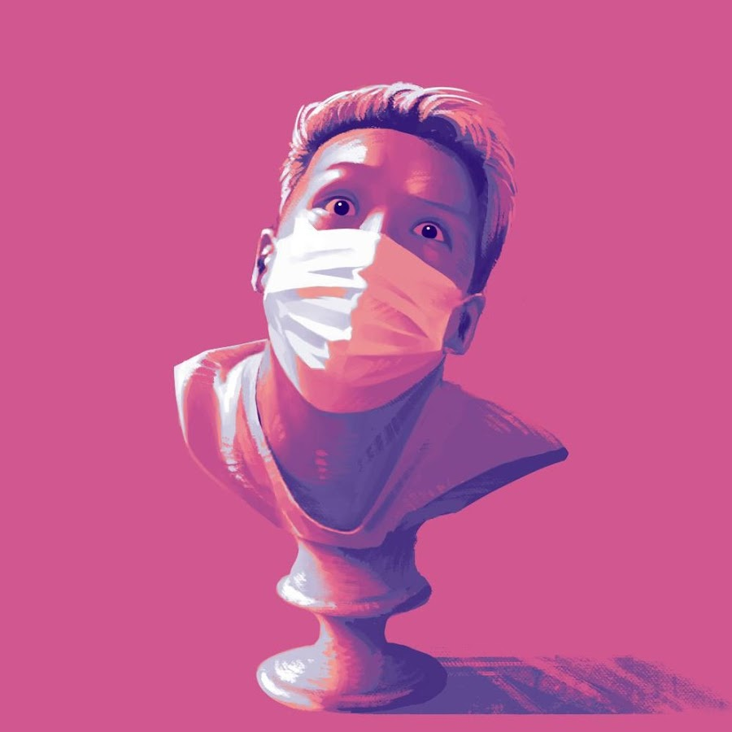
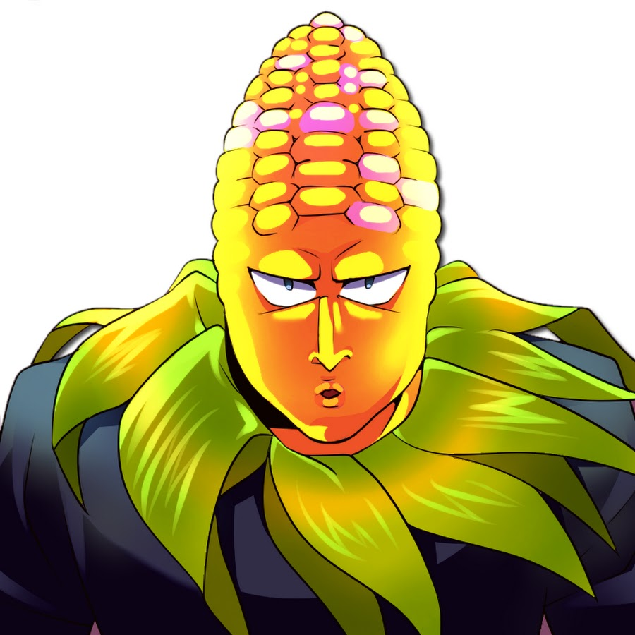

好きなもの紹介 ゲーム実況者
日常組

登録者数
149万人
活動
グループ
主な動画
マインクラフト、マルチゲーム
男４人のグループ。それぞれ個人でも活動している。
代表的なものはマインクラフトの実況動画だけで100個以上動画がある。雰囲気は賑やかで、友達とふざけながらゲームしている感じである。
メンバーのぺいんとさんは明るくうるさい感じで編集担当。しにがみさんはよく女の子に間違われる声をしていて、いつもぺいんとさんから無茶ぶりをされている。また、企画力がすごく良い。クロノアさんは大人な感じで落ち着いていて、弓の射撃が上手い。トラゾーさんは元自衛隊員で、快活な感じで技術班。メンバー内で唯一の既婚者。
最近は投稿頻度も上がってきており、コラボも増え、いろんなゲームをするようになってきて楽しい。
わいわい

登録者数
42.2万人
活動
ソロ
主な動画
鬼畜ゲー、バカゲー、物作りゲー
お喋りが得意な人で、視聴者からおいたんの愛称で親しまれている。ゲームは得意なほうではなく、実況以外でゲームはやっていないらしい。
ゲーム中ほとんど喋り倒していて、ゲームと関係ない話題や身の回りのことを語ることが多い。しかし、その話の内容が面白い。ホラーが苦手だが、どこから何がくるかという状況が怖いのであり、追いかけられたりして敵の姿が見えると全然平気になる。
視聴するときの注意点としては、ゲームのキャラクターをいじることや名前があるなし関わらず、勝手に命名することがあったりもすることがよくあるため、思い入れがあってキャラに愛着があったりするゲームの実況は視聴注意である。まあ、そういうゲームはあまりしないのでそんなに気にならないことではある。
Fields Food

登録者数
34.8万人
活動
ゆっくり実況
主な動画
早期アクセスゲーム、FPS
ゆっくり実況ではあるが、ゆっくりがでてくる訳ではなくオリジナルキャラを使ってゆっくり実況をしている。
有名なゲームはあまりやらず、自分が紹介したいPCゲームを主に動画にしている。例えば、フォートナイトが海外で流行っていて日本ではまだ全然知られていない時に動画を出していたりする。動画の傾向上、インディーズゲームやオープンベータ、アルファ段階のものを動画にすることが多く、あまり知られていないけど面白いゲームを知ることができる。
しかし、動画にしたゲームで開発が頓挫するものがあったりおま国(特定の地域ではできない)するものがある。発想やゲーム性が面白かったりするものもあるので、それ以降動画が出なくなるのは悲しいものがある。
面白いPCゲームを数多く紹介しているので面白いゲームが知りたい人にはお勧めのチャンネルである。
作成者：e204210ot 大石宜昭